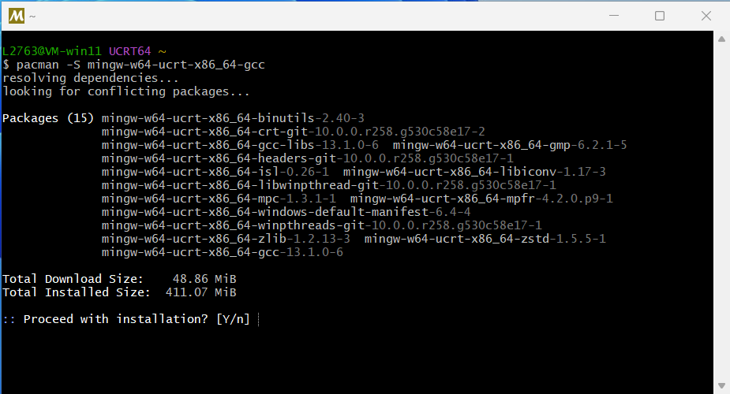
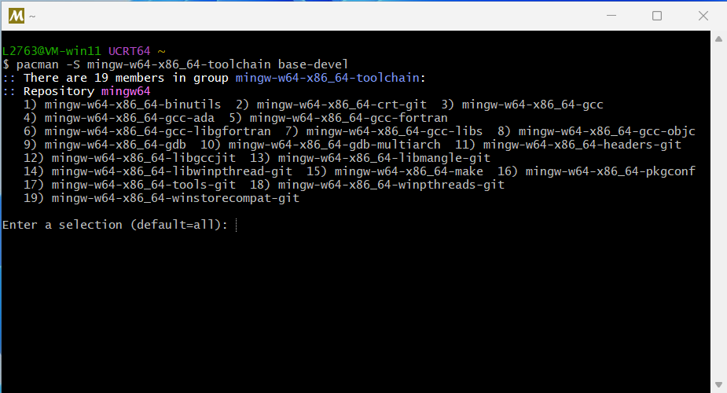
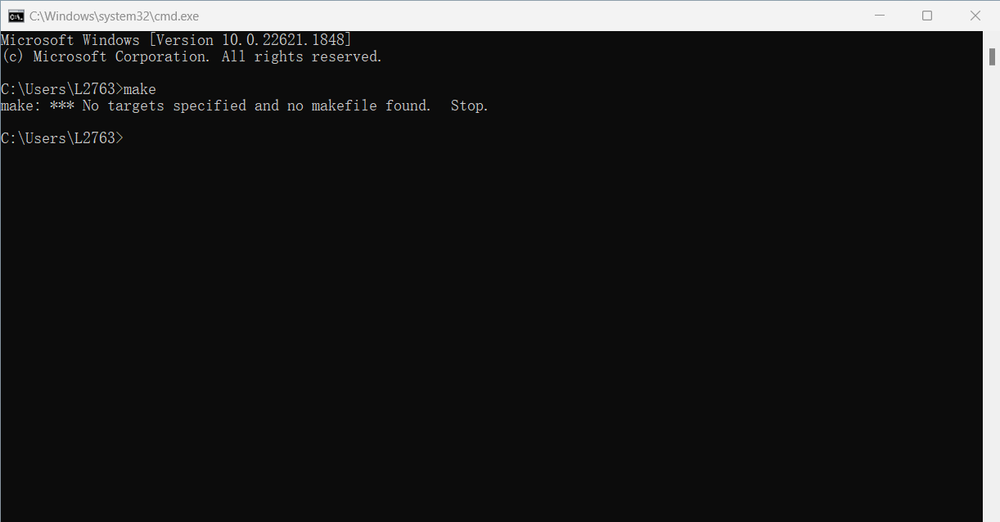
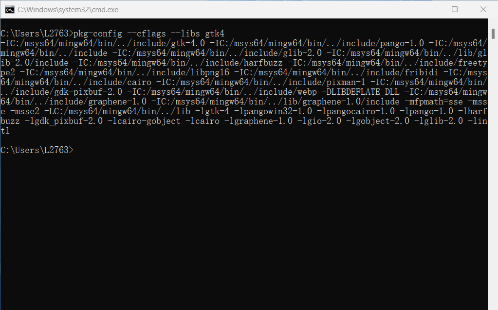
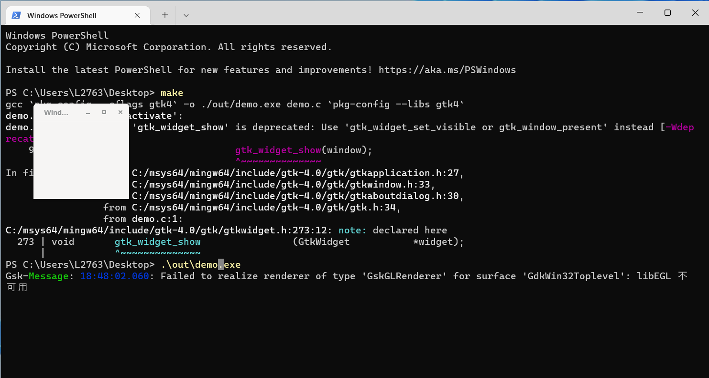

Install GTK4 on Windows

Install GTK4 on Windows11
This is a guide to install and config GTK4 library on Windows 11.
1. Download and install Msys2
This tutorial uses the default installation path, if you use a custom one, you need to pay attention when setting PATH later
Download from here, and install
After clicking Finish, the command line interface will pop up. According to the documentation of Msys2, we first install gcc:
pacman -S mingw-w64-ucrt-x86_64-gcc
- Enter(Y) to install
-

2. Install GTK4 library and Mingw-toolchain
In order to install GTK4, type in the the terminal:
pacman -S mingw-w64-x86_64-gtk4
To use GNU/make and other tools, type:
pacman -S mingw-w64-x86_64-toolchain base-devel
- And Enter unitl finished.

3. Setting Path
Edit System Variable (Follow here)
Add Your path to msys2/mingw64/bin, as default it's C:/\msys64/\mingw64/\bin.
Add Your path to msys2/usr/bin, as default it's C:/\msys64/\usr/\bin.
Given that we need to use make, however, Msys2 will name it as "mingw32-make.exe".
So we go to the directory we just put in PATH (C:/\msys64/\mingw64/\bin), find the "mingw32-make.exe" and rename to "make.exe" (or create copy).
Now, when we open cmd or powershell, and type make -v, it works!

Then, we try
pkg-config --cflags --libs gtk4. We expecte to have output like this:
4. Hello world
Open a new floder, and create a new file called demo.c.
We use the demo from GTK:
#include <gtk/gtk.h> static void activate(GtkApplication* app, gpointer user_data) { GtkWidget* window; window = gtk_application_window_new(app); gtk_window_set_title(GTK_WINDOW(window), "Window"); gtk_window_set_default_size(GTK_WINDOW(window), 200, 200); gtk_widget_show(window); } int main(int argc, char** argv) { GtkApplication* app; int status; app = gtk_application_new("org.gtk.example", G_APPLICATION_DEFAULT_FLAGS); g_signal_connect(app, "activate", G_CALLBACK(activate), NULL); status = g_application_run(G_APPLICATION(app), argc, argv); g_object_unref(app); return status; }
And another file called makefile:
Remember to save them, and open a cmd in this directory (Shift + Right click).
Run make, the .exe file will be generated under ./out. (Ignore warning message)

Smuuary
That's all the steps, looks like it's hard to config the basic environment for C developing.
So, life is short, I choose gentoo :)
Thanks.
Comments
Comments powered by Disqus